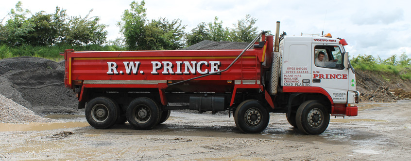

Family owned · South Somerset · Podimore, A303/A37
Aggregates, asphalt, plant hire and waste disposal from one Somerset yard.
R W Prince is a family owned business based in South Somerset, just off the Podimore roundabout on the A37. We supply aggregates and asphalt, and provide plant hire and waste disposal services, to businesses, councils and the general public throughout the South West.
- 4Core services
- A303/A37Junction access
- CardPayments accepted

We have a vast collective knowledge and industry experience of waste disposal, road building, car parks and everything tarmac related.
What we do
One yard, four specialisms
From aggregates and asphalt to recycling and plant hire, we cover the full range of materials and machinery a site needs.
Aggregates
Recycled and primary aggregates of the highest quality, meeting approved standards.
View products →Asphalt / Tarmac
State-of-the-art asphalt plant at the junction of the A303 and A37 trunk routes.
Learn more →Recycling & Waste
Waste disposal, tipping facilities and muck-away from our easy-access Podimore site.
Our services →Plant Hire & Contracting
Grab lorries, tippers and excavators — the right machine for every job.
See fleet →Aggregates
Recycled and non-recycled aggregates, collected or delivered
Our high quality range of recycled and non-recycled aggregates can be collected by you or delivered by us. With a focus on the environmental benefits of minimising primary aggregate extraction, our recycled products are of the highest quality and, where necessary, adhere to all approved standards. We supply everyone from the construction industry and the general public through to local schools and councils.
Request a deliveryAsphalt / Tarmac
A modern asphalt plant at the A303/A37 junction
With our state-of-the-art asphalt plant, we aim to be a leading supplier of tarmac in Somerset. Our location at the junction of the A303 and A37 trunk routes means we can quickly service asphalt and tarmac requirements throughout the South West — including hot boxes, and tarmac and asphalt supply on Sundays.
Recycling & Waste Disposal
Waste disposal and tipping, right off the roundabout
Our easy to access site just off the A303 at the Podimore roundabout makes tipping and waste disposal straightforward. We can also collect waste for disposal from your site anywhere in the South West, for crushing and recycling back into aggregate.
Book a tip runPlant Hire & Contracting
Plant for hire, or contracted with our own operators
We have a large range of plant for hire, or our plant can be contracted out and operated by our highly skilled operators — from grab lorries and tippers to excavators, for jobs of any size.
Hire plantOur fleet & yard
Equipment out on the road and on site
About R W Prince
A family owned business in South Somerset
R W Prince is a family owned business based in South Somerset, just off the Podimore roundabout on the A37. We have a vast collective knowledge and industry experience of waste disposal, road building, car parks and everything tarmac related, supplying businesses, councils and the general public throughout the South West.
Registered in England & Wales, company #4861402.
Why work with us
- Family owned and operated
- One yard for aggregates, asphalt, waste & plant
- Prime location on the A303 / A37 junction
- Card payments accepted
- Tarmac & asphalt available on Sundays
- Serving businesses, councils & the public
Need a delivery, a tip run, or plant on site?
Call the yard directly or send us the details — we'll come back to you the same working day.
Get in touch
Visit, call or send us your enquiry
- Address R W Prince Ltd, Podimore, Yeovil, Somerset, BA22 8JG
- Phone 01935 849 250
- Email dawn@podimorerecycling.co.uk